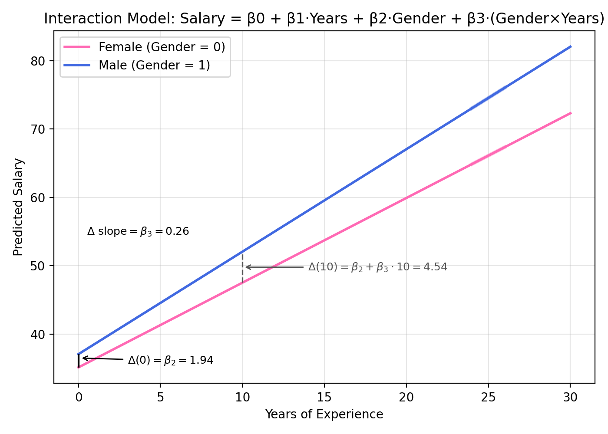

Multiple Linear Regression
Objectives
- Learn how to obtain a multiple linear regression (MLR) model.
- Understand the meaning of regression coefficients.
- Identify the types of data structures that can be analyzed with multiple regression.
- Visualize and interpret multidimensional relationships among qualitative and quantitative variables.
- Determine when and how to include interaction terms in a model.
Adding a Third Variable
- When adding \(X_2\) to the model, the relationship between \(X_1\) and \(Y\) may:
- Remain unchanged, indicating that \(X_2\) is unnecessary.
- Become stronger, weaker, or change direction.
- Vary across different values of \(X_2\), suggesting an interaction effect.
- Typically, explanatory variables \(X_1\) and \(X_2\) are correlated.
- Ideally, there should be no correlation.
- Correlation introduces changes in the estimated response when additional variables are included.
- Variables should only be added to improve model explanation, not simply to increase fit.
Exploratory Approaches to Adding a Third Variable
- Scatterplots:
- Plot each pair: \((X_1, X_2, Y)\)
- Identify potential linear relationships.
- Explanatory variables can be weakly correlated but should have a strong linear relationship with the response variable.
- Pearson correlation:
- Calculate correlation between all pairs of variables.
- Correlation between explanatory variables should ideally be weaker than each variable’s correlation with the response variable.
- If the correlation between explanatory variables is too strong, they may be redundant, indicating multicollinearity.
- Multicollinearity:
- Occurs when explanatory variables are highly correlated, violating the independence assumption.
Regression Equations with Two Predictors
- Population equation: \(Y = \beta_0 + \beta_1 X_1 + \beta_2 X_2\)
- Interpreting slopes:
- The coefficient of an explanatory variable in an MLR model does not usually equal its coefficient in a simple linear regression (SLR), except when \(X_2\) is completely independent of \(X_1\).
- In MLR, the coefficient represents the effect of changing the value of a predictor while holding all other variables constant.
- In SLR, the coefficient represents the effect of changing the value of a predictor without accounting for other variables.
Benefits of Adding Variables
- Improves response prediction.
- Increases the proportion of variance explained by the model.
- Provides a more realistic description when a single explanatory variable is inadequate to explain the response.
Incorporating Categorical (Dummy) Explanatory Variables
- Best practice for a two-category variable:
- Code one category as 0 (the reference group) and the other as 1 (the comparison group).
- The reference category’s mean corresponds to the intercept.
- The coefficient of the indicator variable represents the average difference between the two groups.
Approaches to Handling a Third Variable with Two Categories
- SLR: Both categories are combined.
- Parallel lines model: Different intercepts, same slope.
- Interaction model: Different intercepts and slopes.
Examples of Multiple Linear Regression Models
The following equations illustrate several ways that explanatory variables can enter a multiple linear regression model.
Two predictors, additive model:
\[ \mu(Y \mid X_1, X_2) = \beta_0 + \beta_1 X_1 + \beta_2 X_2 \] The mean of \(Y\) is modeled as a linear function of \(X_1\) and \(X_2\), each contributing additively.One predictor with a quadratic term:
\[ \mu(Y \mid X_1) = \beta_0 + \beta_1 X_1 + \beta_2 X_1^2 \] Includes a squared term for \(X_1\) to capture curvature in the relationship.Two predictors with an interaction term:
\[ \mu(Y \mid X_1, X_2) = \beta_0 + \beta_1 X_1 + \beta_2 X_2 + \beta_3 (X_1 X_2) \] Allows the effect of one predictor to depend on the value of the other.Logarithmic transformation of predictors:
\[ \mu(Y \mid X_1, X_2) = \beta_0 + \beta_1 \log(X_1) + \beta_2 \log(X_2) \] Models multiplicative relationships between \(X_1\), \(X_2\), and \(Y\).
Assumption of Constant Variance
- Constant variance assumption: \(\text{Var}\{Y \mid X_1, X_2\} = \sigma^2\)
The variance of \(Y\) remains the same across all values of \(X_1\) and \(X_2\).
Interpretation of Regression Coefficients
- The regression surface of an MLR model with two explanatory variables is planar:
- \(\beta_0\) represents the height of the plane when both predictors are zero.
- \(\beta_1\) represents the slope along \(X_1\), holding \(X_2\) constant.
- \(\beta_2\) represents the slope along \(X_2\), holding \(X_1\) constant.
- The effect of an explanatory variable is the change in mean response associated with a one-unit increase in that variable, while keeping all other explanatory variables fixed:
- Effect of \(X_1\): \(\mu(Y \mid X_1 + 1, X_2) - \mu(Y \mid X_1, X_2) = \beta_1\)
- Effect of \(X_2\): \(\mu(Y \mid X_1, X_2 + 1) - \mu(Y \mid X_1, X_2) = \beta_2\)
- The coefficient of each explanatory variable measures its effect at fixed values of the other.
- In the planar model, effects are the same at all levels of the explanatory variable.
Illustration of Regression Plane
Parallel Lines Regression Model
- Indicator (dummy) variable:
- Represents two levels of a categorical explanatory variable.
- Takes values 0 (reference group, attribute absent) or 1 (comparison group, attribute present).
- The fit is the same if you reverse the levels of the indicator.
- Represents two levels of a categorical explanatory variable.
- Regression model for an indicator variable:
- When \(\text{pred}_2 = 0\):
\[ \mu(Y \mid X_1, \text{pred}_2 = 0) = \beta_0 + \beta_1 X_1 + \beta_2(0) = \beta_0 + \beta_1 X_1 \] - When \(\text{pred}_2 = 1\):
\[ \mu(Y \mid X_1, \text{pred}_2 = 1) = \beta_0 + \beta_1 X_1 + \beta_2(1) = (\beta_0 + \beta_2) + \beta_1 X_1 \] - Interpretation:
- Slope: \(\beta_1\) (same for both categories).
- Intercept: Adjusted by \(\beta_2\) between the two groups.
- Intercept where \(\text{pred}_2 = 0\) is \(\beta_0\), and intercept where \(\text{pred}_2 = 1\) is \(\beta_0 + \beta_2\).
- The two lines are separated by a constant vertical distance of \(\beta_2\).
- The coefficient of the indicator variable is the difference between the mean response for the indicated category (1) and the reference category (0), at fixed values of the other explanatory variables.
- Slope: \(\beta_1\) (same for both categories).
- When \(\text{pred}_2 = 0\):
Indicator Variables for Categorical Variables with 3+ Categories
- For a categorical variable with \(k\) levels, \(k - 1\) indicator variables are needed.
- The reference category has no indicator variable.
- A shorthand notation capitalizes the categorical variable name to represent the set of indicator variables (e.g., \(\mu\{\text{response} \mid \text{pred}_1, \text{PRED}_2\}\)).
Product Term for Interaction
- Interaction occurs when the effect of one explanatory variable depends on another.
- An interaction term is the product of two explanatory variables.
- Example: Two-level indicator variable:
- General model: \(\mu(Y \mid X_1, X_2) = \beta_0 + \beta_1 X_1 + \beta_2 X_2 + \beta_3 (X_1 \times X_2)\)
- When \(X_2 = 0\): \(\mu(Y \mid X_1, X_2 = 0) = \beta_0 + \beta_1 X_1\)
- When \(X_2 = 1\): \(\mu(Y \mid X_1, X_2 = 1) = \beta_0 + \beta_2 + (\beta_1 + \beta_3)X_1\)
Here, \((\beta_1 + \beta_3)\) is the slope for \(X_1\) when \(X_2 = 1\). - Interpretation (separate slopes model):
- \(\beta_1\): Slope at the reference level.
- \(\beta_3\): Difference in slopes between groups.
Example: Gender, Salary, and Years Model
Parameter Estimates
| Variable | DF | Est | SE | t | Pr > |t | |
|---|---|---|---|---|---|
| Intercept | 1 | 34.19 | 1.22 | 28.04 | <0.0001 |
| Gender | 1 | 3.35 | 1.46 | 2.29 | 0.0263 |
| Years | 1 | 1.44 | -1.33 | 10.83 | <0.0001 |
The Gender coefficient (3.35) represents the adjustment to the intercept for the reference category (males vs. females).
Gender (Indicator Variable)
- 0 = Female (reference group)
- 1 = Male (comparison group)
Model
\[
\text{Salary} = \beta_0 + \beta_1 \cdot \text{Years} + \beta_2 \cdot \text{Gender}
\]
All constants to the left:
\[
\text{Salary} = \left( \beta_0 + \beta_2 \cdot \text{Gender} \right ) + \beta_1 \cdot \text{Years}
\]
- Female intercept: \(\beta_0 + \beta_2 \cdot 0 = \beta_0\)
- Male intercept: \(\beta_0 + \beta_2 \cdot 1 = \beta_0 + \beta_2\)
- Slope for Years: \(\beta_1\) (same for both groups)
Predicted Salary Equations
Parallel lines with different intercepts:
- Female: \(\text{Salary} = 34.19 + 1.44 \cdot \text{Years}\)
- Male: \(\text{Salary} = (34.19 + 3.35) + 1.44 \cdot \text{Years} = 37.54 + 1.44 \cdot \text{Years}\)
Interpretation: After accounting for years of experience, the estimated difference in mean salaries between males and females is $3,350, with males earning more on average.
Example: Gender × Years Interaction Model
Parameter Estimates
| Variable | DF | Est | SE | t | Pr > |t | |
|---|---|---|---|---|---|
| Intercept | 1 | 35.12 | 1.67 | 20.97 | <0.0001 |
| Years | 1 | 1.24 | 0.28 | 4.38 | <0.0001 |
| Gender | 1 | 1.94 | 2.29 | 0.85 | 0.4021 |
| Gender × Years | 1 | 0.26 | 0.08 | 3.19 | 0.0025 |
Gender coding (indicator variable)
- 0 = Female (reference group)
- 1 = Male (comparison group)
Model
\[
\mu(\text{Salary} \mid \text{Years}, \text{Gender})
= \beta_0 + \beta_1 \cdot \text{Years} + \beta_2 \cdot \text{Gender}
+ \beta_3 \cdot (\text{Gender} \times \text{Years})
\]
Group‑specific equations
- Female (\(\text{Gender}=0\)):
\[ \mu(\text{Salary} \mid \text{Years}, 0) = \beta_0 + \beta_1 \cdot \text{Years} = 35.12 + 1.24 \cdot \text{Years} \] - Male (\(\text{Gender}=1\)):
\[ \mu(\text{Salary} \mid \text{Years}, 1) = (\beta_0 + \beta_2) + (\beta_1 + \beta_3)\cdot \text{Years} \] \[ = (35.12 + 1.94) + (1.24 + 0.26)\cdot \text{Years} = 37.06 + 1.50 \cdot \text{Years} \]
Interpretation
- Intercept difference at 0 years (male vs. female): \(\beta_2 = 1.94\).
- Slope difference (male vs. female): \(\beta_3 = 0.26\).
- Vertical difference at a fixed number of years \(x\):
\(\Delta(x) = \beta_2 + \beta_3 x\).
For example, at 10 years, \(\Delta(10) = 1.94 + 0.26(10) = 4.54\).
